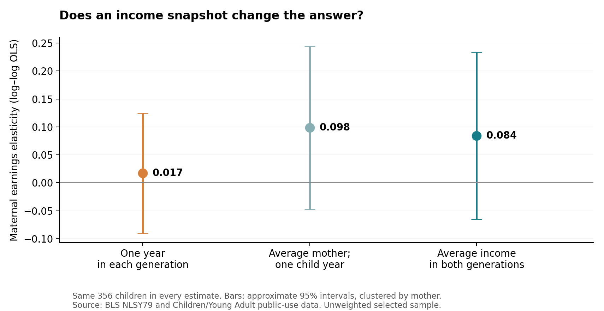
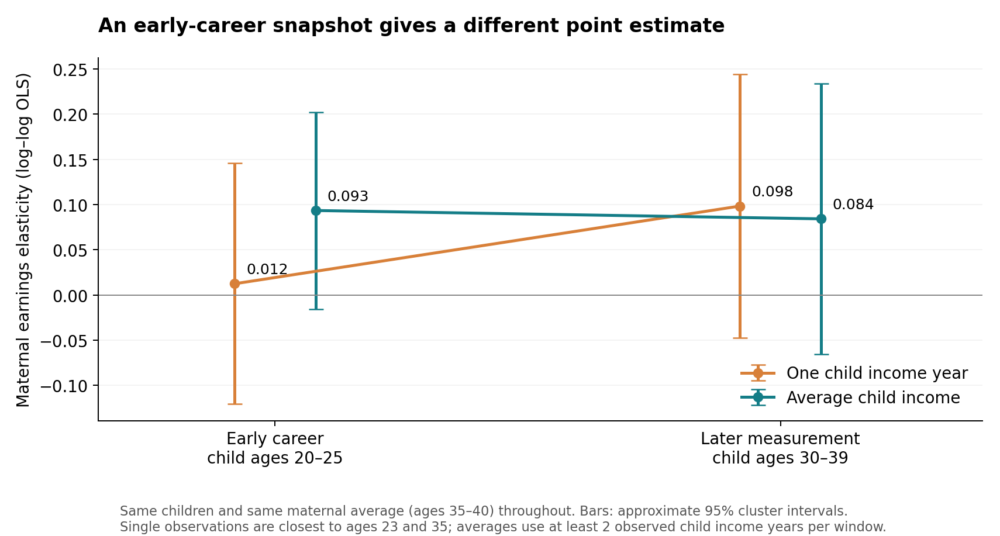
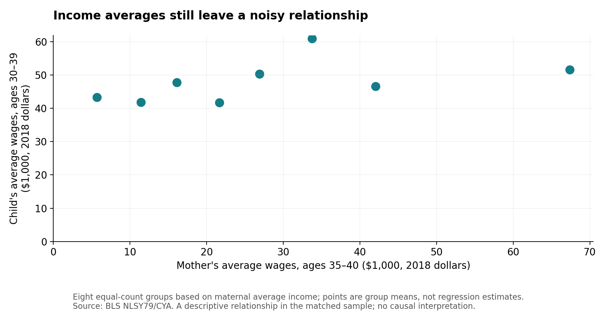

One Family Link, Several Measures of Income Persistence
Does measured income persistence change when we replace one year’s income with several years—and measure the child later in life? That question matters when interpreting economic mobility: a student’s first job may say little about their eventual earnings.
This tutorial links real mothers and children, then compares income definitions on the same 356 children from 290 mothers. The single-year elasticity is 0.017; averaging both generations gives 0.084. The uncertainty is wide, so these are measurement comparisons, not a precise estimate of U.S. mobility.
1. Start with documented family links
I use the BLS NLSY79 and Children/Young Adult public-use files, the archived releases through the 2018 wave. BLS documents the link: child ID C00001.00 identifies the individual; C00002.00 identifies their mother and groups maternal siblings. It matches the mother’s R00001.00 in NLSY79. I call this maternal-family key family_id; it does not identify a current household.
Download the repository folder, open a Terminal inside blog/posts/post6, and run:
python -m pip install -r requirements.txt
python code/run_analysis.pyPython reshapes the supplied original-variable extracts into person-year tables and loads SQLite, using Python’s built-in sqlite3 module. No database server is needed. The complete pipeline saves its database and results. To follow individual steps in a Python session opened in this folder:
import sys
sys.path.insert(0, "code")
from run_analysis import build_database, fit_ige
con, matched, sample_flow = build_database()
# Run a SQL query from Python and inspect five actual matches.
import pandas as pd
print(pd.read_sql_query("""
SELECT child_id, family_id, mother_id
FROM links ORDER BY child_id LIMIT 5
""", con))The actual matching query is:
-- C00002.00 is the mother's NLSY79 ID. It also groups maternal siblings.
-- SELECT chooses the columns; JOIN matches this family key to one mother.
CREATE TABLE links AS
SELECT c.child_id, c.family_id, m.mother_id,
c.birth_year AS child_birth_year, c.sex AS child_sex,
m.birth_year AS mother_birth_year
FROM children AS c
JOIN mothers AS m ON c.family_id = m.mother_id
WHERE m.sex = 2 AND m.sample_code BETWEEN 5 AND 8;
CREATE UNIQUE INDEX links_child_key ON links(child_id);SELECT chooses columns. JOIN ... ON attaches each child to the mother with the matching identifier. WHERE restricts mothers to the original cross-sectional sample. Multiple children can match one mother; each child must appear once. A unique index checks that rule.
2. Build comparable income measures
Here, income means the individual’s annual wages, salary, commissions and tips before tax, excluding self-employment and other income. Parental income is maternal earnings; it does not combine both parents’ resources.
The script converts negative missing-data codes to missing values and adjusts earnings to 2018 dollars using annual CPI-U, before averaging. Age means income year minus birth year. From the 2014 child wave onward, income year follows the actual interview date.
-- GROUP BY collapses person-year rows to one row per person.
-- AVG aggregates wage LEVELS (including zeros); COUNT records coverage.
-- WHERE filters input rows; HAVING filters the resulting groups.
CREATE TABLE parent_average AS
SELECT mother_id, AVG(real_wages) AS parent_average,
COUNT(*) AS parent_years
FROM mother_real
WHERE age BETWEEN 35 AND 40
GROUP BY mother_id
HAVING COUNT(*) >= 3;
CREATE TABLE child_early_average AS
SELECT child_id, AVG(real_wages) AS early_average,
COUNT(*) AS early_years
FROM child_real
WHERE age BETWEEN 20 AND 25
GROUP BY child_id
HAVING COUNT(*) >= 2;
CREATE TABLE child_mature_average AS
SELECT child_id, AVG(real_wages) AS mature_average,
COUNT(*) AS mature_years
FROM child_real
WHERE age BETWEEN 30 AND 39
GROUP BY child_id
HAVING COUNT(*) >= 2;GROUP BY collects each person’s rows. Aggregation reduces them to a summary: AVG calculates mean real earnings; COUNT records coverage. HAVING requires enough observed years. Zeros remain in these averages; missing years do not become zeros. Older children were interviewed less frequently, so these are averages of observed annual incomes, not complete annual histories.
For single-year measures, the code selects observations closest to maternal age 38 and child ages 23 and 35, breaking ties toward the earlier year. It selects the year before checking whether income is positive. All comparisons then use the same pairs with positive anchor incomes and averages. Aggregate each annual panel first, then join the summaries; joining both annual panels directly would multiply rows.
3. Estimate and interpret the IGE
The intergenerational elasticity is the slope in
\[ \log(Y_{child,i})=\alpha+\beta\log(Y_{mother,i})+\varepsilon_i. \]
It describes proportional differences, not dollars inherited or a causal effect. For small differences, 1% higher maternal earnings is associated with approximately \(\beta\)% higher child earnings. Python estimates the slope by ordinary least squares:
import numpy as np
x = np.log(matched["parent_average"].to_numpy())
y = np.log(matched["mature_average"].to_numpy())
X = np.column_stack([np.ones(len(x)), x])
alpha, ige = np.linalg.lstsq(X, y, rcond=None)[0]
print(ige)
# Same slope, with uncertainty accounting for siblings sharing a mother:
print(fit_ige(matched, "parent_average", "mature_average"))
Averaging maternal income raises the point estimate to 0.098; averaging the child’s income as well gives 0.084. Averaging need not raise the estimate at every step. The paired cluster-bootstrap interval for the overall change includes zero. These data do not establish a statistically clear increase.
4. Separate averaging from life-cycle timing

Holding maternal income fixed, the single-child-year estimate changes from 0.012 in the early-career window to 0.098 in the thirties. The paired difference is imprecise. This demonstrates age sensitivity, a warning sign of life-cycle bias; it cannot reveal the exact bias without lifetime income.
Why can bias arise? Suppose early log earnings equal \(\lambda_a\) times long-run log earnings, plus unrelated noise. With an accurate parental measure, the observed slope is approximately \(\beta_a=\lambda_a\beta_{\text{long run}}\). If \(\lambda_a<1\), an early snapshot understates persistence. Different career growth paths make this possible; simply adding an average age profile does not fix it (Haider and Solon, 2006).
Averaging can reduce temporary shocks and reporting noise. Independent yearly shocks average out; persistent shocks average out more slowly. Averaging early-career income still cannot guarantee a measure of lifetime status.

These unweighted estimates describe a selected, observed sample, not the U.S. population. Attrition, young motherhood in older child cohorts, positive-income restrictions, top coding, gender differences and calendar conditions limit interpretation. Lifetime income is unobserved; the later average is a benchmark, not ground truth.
The takeaway: establish the family link, average comparable real incomes, and check measurement ages before interpreting an IGE as persistence in long-run economic status. A successful SQL match solves identification of relatives; economic interpretation still depends on what their income measures capture.
| Sample step | Children |
|---|---|
| All child records | 11,545 |
| Linked to cross-sectional-sample mothers | 5,816 |
| Required income-year coverage in all 3 windows | 549 |
| Positive anchor years and averages: common sample | 356 |
The final children were born in 1973–1985. Maternal averages use 3–4 observed annual incomes at ages 35–40. Early child averages use 2–3 at ages 20–25; later averages use 2–4 at ages 30–39. Mean single-year ages are 37.6, 22.6 and 34.6, respectively.
| Income measures | IGE | Approx. 95% interval |
|---|---|---|
| Single year in both generations | 0.017 | -0.090 to 0.125 |
| Average mother; single child year | 0.098 | -0.047 to 0.244 |
| Average both generations | 0.084 | -0.065 to 0.234 |
| Child early 20s: single year | 0.012 | -0.121 to 0.146 |
| Child ages 20–25: average | 0.093 | -0.015 to 0.202 |
Intervals use mother-clustered standard errors and a normal approximation. The paired bootstrap resamples the observed mother clusters 500 times, keeping siblings together; it does not generate artificial incomes. The supplied code also saves estimates controlling for child sex and birth year, whose patterns can be inspected in results/adjusted_estimates.csv.
Sources were downloaded October 20, 2026. The Post 6 repository folder contains all selected inputs, original variable references and codebook entries, source URLs and hashes, Python code, the executed SQL queries, and generated outputs. See its README for RStudio publishing instructions and optional reconstruction from the full official archives. The included small extracts let the main analysis run offline after package installation.
Run these through con.executescript(...) on the tables loaded by build_database(). That function already executes all five files in order; do not execute the CREATE TABLE statements again in the same connection.
-- Negative survey codes become NULL in Python before these queries run.
-- Keep reported zeros here: they are genuine zero-wage years.
CREATE TABLE mother_real AS
SELECT e.mother_id, e.income_year,
e.income_year - m.birth_year AS age,
e.nominal_wages * b.cpi_u / p.cpi_u AS real_wages
FROM mother_income AS e
JOIN mothers AS m ON e.mother_id = m.mother_id
JOIN cpi AS p ON e.income_year = p.year
CROSS JOIN (SELECT cpi_u FROM cpi WHERE year = 2018) AS b
WHERE e.nominal_wages >= 0;
CREATE TABLE child_real AS
SELECT e.child_id, e.income_year,
e.income_year - c.birth_year AS age,
e.nominal_wages * b.cpi_u / p.cpi_u AS real_wages
FROM child_income AS e
JOIN children AS c ON e.child_id = c.child_id
JOIN cpi AS p ON e.income_year = p.year
CROSS JOIN (SELECT cpi_u FROM cpi WHERE year = 2018) AS b
WHERE e.nominal_wages >= 0;
CREATE UNIQUE INDEX mother_year_key ON mother_real(mother_id, income_year);
CREATE UNIQUE INDEX child_year_key ON child_real(child_id, income_year);-- Select the observed year closest to a predeclared target age.
-- Break ties using the earlier income year, before checking positivity.
CREATE TABLE parent_single AS
SELECT e.mother_id, e.real_wages AS parent_single, e.age AS parent_single_age
FROM mother_real AS e
WHERE e.age BETWEEN 35 AND 40
AND e.income_year = (
SELECT q.income_year FROM mother_real AS q
WHERE q.mother_id = e.mother_id AND q.age BETWEEN 35 AND 40
ORDER BY ABS(q.age - 38), q.income_year LIMIT 1
);
CREATE TABLE child_early_single AS
SELECT e.child_id, e.real_wages AS early_single, e.age AS early_single_age
FROM child_real AS e
WHERE e.age BETWEEN 20 AND 25
AND e.income_year = (
SELECT q.income_year FROM child_real AS q
WHERE q.child_id = e.child_id AND q.age BETWEEN 20 AND 25
ORDER BY ABS(q.age - 23), q.income_year LIMIT 1
);
CREATE TABLE child_mature_single AS
SELECT e.child_id, e.real_wages AS mature_single, e.age AS mature_single_age
FROM child_real AS e
WHERE e.age BETWEEN 30 AND 39
AND e.income_year = (
SELECT q.income_year FROM child_real AS q
WHERE q.child_id = e.child_id AND q.age BETWEEN 30 AND 39
ORDER BY ABS(q.age - 35), q.income_year LIMIT 1
);-- Aggregate each generation FIRST. Joining both annual panels directly
-- would create every possible parent-year x child-year combination.
CREATE TABLE covered_pairs AS
SELECT l.*, p.parent_average, p.parent_years,
e.early_average, e.early_years,
a.mature_average, a.mature_years,
ps.parent_single, ps.parent_single_age,
es.early_single, es.early_single_age,
ms.mature_single, ms.mature_single_age
FROM links AS l
JOIN parent_average AS p ON l.mother_id = p.mother_id
JOIN child_early_average AS e ON l.child_id = e.child_id
JOIN child_mature_average AS a ON l.child_id = a.child_id
JOIN parent_single AS ps ON l.mother_id = ps.mother_id
JOIN child_early_single AS es ON l.child_id = es.child_id
JOIN child_mature_single AS ms ON l.child_id = ms.child_id;
-- Every specification uses exactly these same pairs.
CREATE TABLE matched AS
SELECT * FROM covered_pairs
WHERE parent_single > 0 AND early_single > 0 AND mature_single > 0
AND parent_average > 0 AND early_average > 0 AND mature_average > 0;
CREATE UNIQUE INDEX matched_child_key ON matched(child_id);